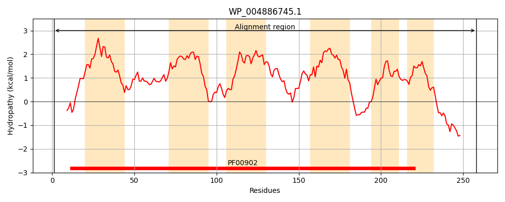
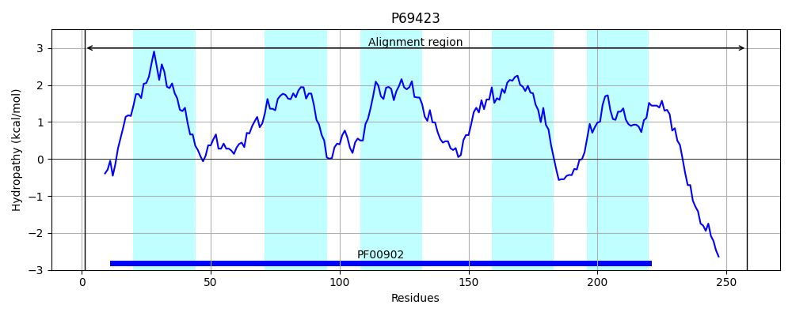
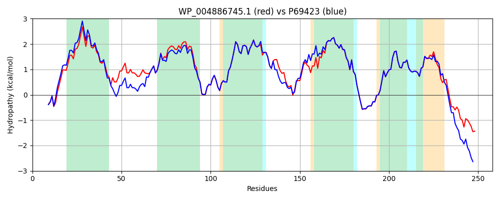

Hit Accession: P69423
Hit TCID: 2.A.64.1.1
Hit Description: gnl|BL_ORD_ID|11262 gnl|TC-DB|P69423|2.A.64.1.1 Sec-independent protein translocase protein tatC - Escherichia coli.
Mach Len: 258
e:0.000000
Query TMS Count : 6
Hit TMS Count: 5
TMS-Overlap Score: 5.850000
Predicted Substrates:None
BLAST Alignment:
Score: 1114 , Bit scores: 433 bits, E-value: 5.6e-156, Alignment length: 258, Percentage identity: 83
Query: 1 MGVDDTQPLISHLIELRKRLLNSIIAILVIFLALVYFANDIYQLVSAPLISKMPVGATMIATDVASPFFTPIKLTFMVSVILSVPIILYQVWAFVAPALYKHERRLVVPLLVSSTLLFYIGMAFAYFVVFPLAFGFLTHAAPEGVLVSTDIRSYLDFVMALFMAFGVSFEVPVAIVLLCWMGVTTPEELRKKRPYVLVGAFVVGMLLTPPDVFSQTLLAIPMYCLFEVGVFFARFYTGKRLTRDDDAAAEAEAAEHRE 258
M V+DTQPLI+HLIELRKRLLN IIA++VIFL LVYFANDIY LVSAPLI ++P G+TMIATDVASPFFTPIKLTFMVS+ILS P+ILYQVWAF+APALYKHERRLVVPLLVSS+LLFYIGMAFAYFVVFPLAFGFL + APEGV VSTDI SYL FVMALFMAFGVSFEVPVAIVLLCWMG+T+PE+LRKKRPYVLVGAFVVGMLLTPPDVFSQTLLAIPMYCLFE+GVFF+RFY GK R+++ AEAE+ + E
Sbjct: 1 MSVEDTQPLITHLIELRKRLLNCIIAVIVIFLCLVYFANDIYHLVSAPLIKQLPQGSTMIATDVASPFFTPIKLTFMVSLILSAPVILYQVWAFIAPALYKHERRLVVPLLVSSSLLFYIGMAFAYFVVFPLAFGFLANTAPEGVQVSTDIASYLSFVMALFMAFGVSFEVPVAIVLLCWMGITSPEDLRKKRPYVLVGAFVVGMLLTPPDVFSQTLLAIPMYCLFEIGVFFSRFYVGKGRNREEENDAEAESEKTEE 258 | Protein Hydropathy Plots: |
|---|
|  |  |
Pairwise Alignment-Hydropathy Plot:
|
|---|
|  |